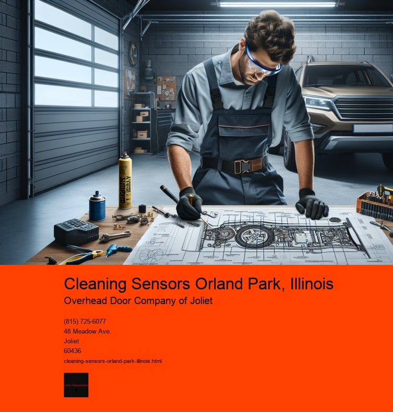

The Importance and Process of Cleaning Sensors in Orland Park, Illinois
In the bustling village of Orland Park, Illinois, technology continues to play a pivotal role in enhancing everyday life. From industrial operations to smart homes, sensors are indispensable components that facilitate automation, safety, and efficiency. However, the optimal performance of these sensors is contingent upon regular maintenance, specifically cleaning. This essay explores the significance of cleaning sensors in Orland Park and provides an overview of the cleaning process.
Sensors are devices that detect and respond to changes in the environment. They are used in various applications, including monitoring temperature, motion, light, and humidity. In Orland Park, businesses and homeowners alike rely on sensors for security systems, environmental control, and even in manufacturing processes. Over time, however, sensors can accumulate dust, dirt, and other debris, which can impair their functionality. This is particularly true in industrial settings, where particles and pollutants are more prevalent.
The importance of cleaning sensors cannot be overstated. Firstly, dirty sensors can lead to inaccurate readings, which may result in inefficiencies or even hazardous situations. For instance, a sensor that fails to detect smoke due to dirt accumulation could delay fire detection, compromising safety. Secondly, unclean sensors can cause systems to work harder than necessary, leading to increased energy consumption and higher operational costs. Regular cleaning helps maintain the accuracy and efficiency of sensor systems, ultimately extending their lifespan and reliability.
Cleaning sensors is a meticulous process that requires care and precision. It typically involves a few key steps. Initially, the power to the sensor should be turned off to prevent any accidental damage or data corruption. Once powered down, the sensor can be carefully removed from its location. Depending on the type of sensor, different cleaning methods may be used. For optical sensors, a gentle wipe with a microfiber cloth may suffice, while more stubborn grime might require a specialized cleaning solution. Ultrasonic sensors, on the other hand, may need to be cleaned with compressed air to remove any dust lodged in their components.
In Orland Park, where seasonal changes can contribute to varying levels of dust and debris, it is advisable to establish a routine cleaning schedule for sensors. This ensures that they remain in optimal working condition year-round. For homeowners, this might mean a quarterly check-up, while industrial settings may require more frequent maintenance due to the higher levels of pollutants and contaminants.
Moreover, professional cleaning services are available in Orland Park for those who prefer expert handling of their sensor systems. These services not only clean but also inspect the sensors for any potential issues, providing peace of mind and ensuring that the systems are functioning as they should.
In conclusion, cleaning sensors is a crucial aspect of maintaining technological systems in Orland Park, Illinois. As these devices play an integral role in various applications, their regular maintenance is essential for accuracy, efficiency, and longevity. Whether through self-maintenance or professional services, ensuring that sensors remain clean is a small investment for the significant benefits of safety, cost savings, and system reliability. In a community that values innovation and efficiency, keeping sensors in pristine condition is a step toward a smarter, more secure future.
Opener Force Adjustment Orland Park, Illinois
